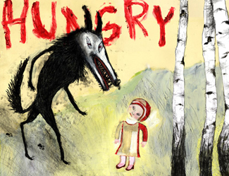
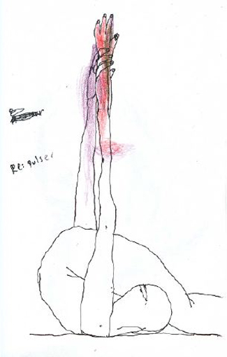
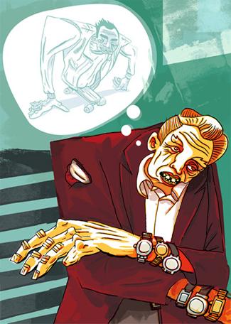
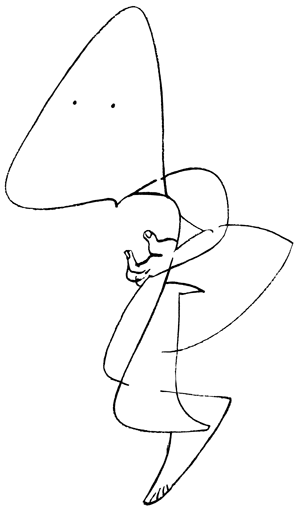
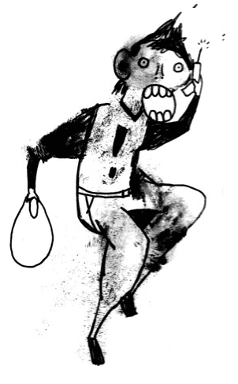

ОБ ОШИБКЕ
Лучше быть кривым, чем мертвым
Совершенство существует. Это аксиома. Оно существует, и нет никаких причин к нему не стремиться. Мало денег, мало времени — не прокатывает.
Но тут есть нюансы. Последовательно улучшая слабовато начатую работу, добиться совершенства невозможно. Хорошее начало в нашем деле — это больше половины. Вылизывать же есть смысл только в том случае, если с первым же взмахом (чего бы там ни было) ясно, что лучше вы ничего и никогда не сделаете (в идеале это ощущение должно сопутствовать каждой новой работе).
Есть у меня теорема насчет того, что популярность тех режимов рисования, где качество работы измеряется как раз степенью зализанности, связана не только и не столько с попсовым вкусом среднего клиента, но с паническим страхом художника ошибиться и обнаружить ошибку. Страх, как известно, ведет на темную сторону. Митьки про такую работу говорят "заподлицо" и делают специфический жест рукой.

Ошибка есть вернейший признак некибернетической жизни. Умение ошибаться художнику необходимо. Ошибаются даже самые высокие мастера, и отличает их скорее умение любую ошибку обернуть к своей выгоде, чем отсутствие таковой (не помню, кто сказал: «Глупцы учатся на ошибках, мудрец пренебрегает собственным опытом». Не очень, может быть, точно подходит к случаю, зато красиво). В этом, очевидно, и состоит мастерство — попадать в десятку от бедра, не целясь. Слишком часто на полпути пуля теряет скорость и начинает клониться носом к земле.
Иллюстрация, конечно, больше похожа на спортивную игру Кёрлинг, чем на стрельбу, но и тут все, что происходит после вот этого первого взмаха-выстрела, глубоко второстепенно. Есть еще вот какая теорема: если вот это первое движение не пережило процесса — нужно начинать сначала.
Cамое сложное в этом — может статься, самое сложное и важное в нашем деле умение после собственно рисунка — это научиться безжалостно отказываться от проделанной работы. По своему опыту могу сказать, что подобная тактика, хотя и затягивает процесс, оправдывает себя по крайней мере в том смысле, что потом не бывает мучительно больно за зализанную насмерть вещь, которая и без того была полуживой. Кроме того, повторить раз пройденный процесс со второго раза гораздо проще (это, разумеется, не относится к тем режимам рисования, где качество измеряется зализанностью).

В этом, кстати, состоит главное зло компьютерного рисования и в частности сочетания Ctrl — Z (не говоря уже об эффекте привыкания — рисуешь, бывает, что-нибудь на бумаге, а левая рука, привычно растопырясь, так и ищет заветные клавиши). Прикипев к возможности исправить любую ошибку на любом этапе, мы по-нехорошему расслабляемся, перестаем чувствовать ответственность за каждое, опять же, движение.
Впрочем, и густые краски тоже, пожалуй, слишком располагают к удалению из рисунка избыточной кривоты, то есть образно выражаясь, к его стерилизации.
Поэтому я за тушь, вот кого не обманешь.

Вообще, ошибка есть замечательное выразительное средство. Ее еще называют «элемент случайности».
В этом смысле highly recommended игра в закорючки, загогулины или каляки-маляки, как угодно. На нее я потратил все свои четыре года в стенах МИИТа, и большей пользы они мне принести не могли. Замечательное упражнение, для пластики рисунка пожалуй, что и незаменимое.

Смысл, думаю, понятен — есть только одно правило: не рисовать мордашек. Это слишком просто, что-нибудь наверняка сойдет за нос, к нему всегда найдутся глазки, а остальное можно считать волосами. Нет уж, надо чтоб были ручки и ножки, а по возможности и более одного героя. И дорисовывайте как можно меньше. Идеальному зрителю (есть еще теорема о том, что такой непременно существует) достаточно показать пальцем: вот ноги, а здесь голова, а это ружье.

Современные технологии родили предмет под названием «гитарный компьютер», который позволяет настраивать гитару по цифре, с точностью до какого-нибудь миллимела. Так вот, серьезные гитаристы после такой процедуры (а на гитаре, если вдруг кто не знает, в отличие от скрипки, например, невозможно взять фальшивый звук — можно только не тот ) специально подрасстраивают ее — чтобы звучала неидеально.